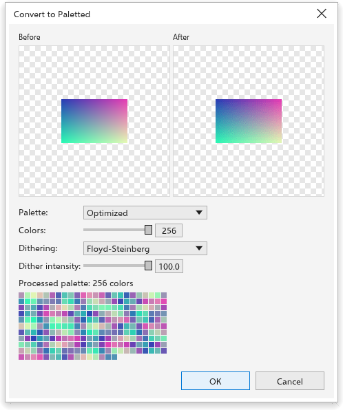

এই পৃষ্ঠাটি এখনও অনূদিত হয়নি এবং ইংরেজিতে দেখানো হচ্ছে।
Changing the color mode of bitmaps
Bitmaps > Mode converts the selected bitmaps to another color mode. Every selected bitmap changes in one undo step, and transparency is kept. The modes with settings open a dialog box you can size, with the picture before and after the change in the Before and After preview on the left and the settings on the right.
| Mode | Result |
|---|---|
| Black and White (1-bit) | black and white only (see below) |
| Grayscale (8-bit) | shades of gray |
| Duotone (8-bit) | one to four inks (see below) |
| Paletted (8-bit) | at most 256 colors (see below) |
| RGB Color (24-bit) | the bitmap's mode becomes RGB; the pixels stay as they are |
| Lab Color (24-bit) | Lab color |
| CMYK Color (32-bit) | the bitmap's mode becomes CMYK and its pixels show the colors the inks can print, worked out with the color management profiles |
The menu ticks RGB Color (24-bit) or CMYK Color (32-bit) when every selected bitmap is in that mode, and the status bar names the mode of a selected bitmap, such as "Bitmap 600 x 400 px (CMYK)". A CMYK picture of a .cdr file opens in the CMYK mode, and .tdraw files keep the mode. Tools > Convert Colors sets the mode of every bitmap it converts in the same way (see Converting colors).
Black and white

Choose the conversion method:
- Line art: white where the gray is at or above the threshold (128 at first), black elsewhere;
- Ordered: a regular pattern of dots;
- Halftone (at first): a screen of round, line or square dots at an angle (45 degrees) and a number of lines per inch (60);
- Cardinality-distribution: a random-looking texture;
- Jarvis, Stucki and Floyd-Steinberg: error diffusion, the smoothest results for photos.
Intensity (0 to 100, 50 at first) makes the result lighter or darker.
Duotone

A duotone prints a grayscale picture with a few inks, which gives rich tones with few colors.
- Choose the type: Monotone, Duotone (at first), Tritone or Quadtone, for one to four inks.
- Click an ink to change its color.
- Edit its curve: across is the gray level (black on the left), up is how much of that ink prints. Drag on empty space to add a point, drag a point to move it, double-click it or drag it off the grid to remove it. Show all draws the other inks' curves too.
- Save and Load keep the inks and curves in a file.
Paletted

- Palette: Uniform Colors, Standard VGA (16 colors), Adaptive and Optimized (the picture's own colors, reduced to the number of colors you set, up to 256), Grayscale, System or Custom (the document palette).
- Dithering: None, Ordered, Jarvis, Stucki or Floyd-Steinberg, with the dither intensity.
The resulting palette shows under the settings.
Coloring black and white bitmaps
With only two-color bitmaps selected, click a palette color to color their background, and right-click to color their foreground.